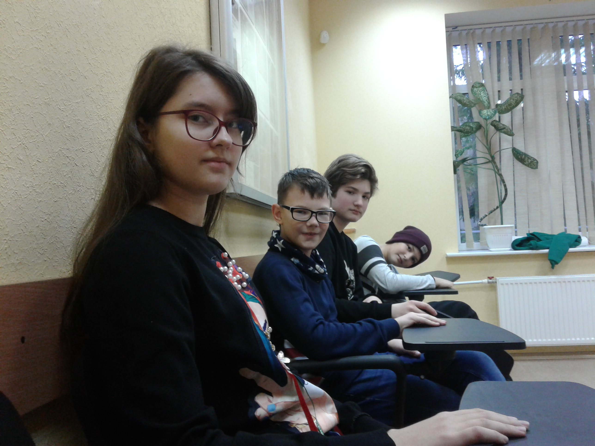

Мой дневник мыслей, впечатлений и историй
Здесь будут записаны мои впечатления и воспоминания, так что не удивляйтесь, что здесь записан какой-то бред. Ну и еще на занятиях мы должны делать какой-нибудь проект, и в этоге полочучилось ЭТО. (Не бейте меня, я пытаталась что-то сделать, это сложно)
Первый день
Мы приехали в лагерь где-то часам к одинадцати. Я всю дорогу проспала и поэтому не видела дороги. Из-за того, что я проснулась как только мы приехали, выходя из автобуса, я была сонная. Когды все вышли и взяли свои чемоданы, нас попросили встать по парам, и ко мне подошла девочка и передложила пойти вместе, ну и мы познакомились. Ее зовут Даша.
Нас отвели на цокольный этаж и рассказали про лагерь, и также разделили по отрядам. Так как я записана на айти-кэмп, я была в третьем отряде. Даша была в первом, так как в первый и во второй отряды записывали проф-кэмп, и между ними разделяли по возрасту. Наставники отрядов провели нам инструктаж о правилах в лагере и о его расписании. Позже нас расселили по комнатам. Меня поселили в шестнадцатый номер с девочкой которую зовут Вика. Мы оставили вещи и пошли на занятия.
После занятий мы пошли обедать. Там я встретила девочек за одним столом. Оказалось, что они смотрят один и тот же сериал. Также они мне расказали, что они попросили комнату на троих чтобы мы могли быть соседками по комнате. По расписанию у нас должен был быть тихий час, но так как многие хотели жить в комнатах с конкретными людьми. у нас было расселение по комнатам так, как всем хочется.
Первым делом расселили всех девочек. Но случилось так, что было две группы по трое девчат, а комната на троих была одна, то есть кто-то из нас будет жить втроем, а кто-то будет жить вдвоем и один. Чтобы разрешить эту проблему было решено положиться на великий рандом, и той троице был задан вопрос: "Секундная стрелка до или после тридцати секунд". ... Ну что сказать... МЫ ЖИВЕМ В ОДНОЙ КОМНАТЕ! Как только нам об этом сказали мы завижали от радости и стали водить хоровод в тячении где-то пяти-семи секунд. Мы отпрпавились в свою комнату, которую нам отдали, и стали разбирать свои вещи.
По окончанию тихого часа мы отправились на второе занятие. Описывать все, что было я не буду, ну только если было что-то действительно интересное. Ведь результат этих занятий вы видете сейчас перед собой.
После третьего занятия по расписанию у нас полдник, но так как мы приехали к тому времени, когда у нас уже прошло одно занятие, следователльно, по расписанию у нас было второе занятие, а не третье (ну я думаю, что это и так было понятно).
После полдника у всех отрядов отрядное время (что, в принцепе, логично(я про название)). Там мы говорили факты о себе — два правдивых и один ложный, а было ли что-нибудь еще я уже не помню, ведь последние предложения я пишу в третий день лагеря. После у нас последнее, четвертое, занятие. Но у меня была проблемка: утром, за несколько минут до выхода из дома, чтобы поехать на место сбора людей в лагерь у меня оторвался самый последний брекет, (у меня брекеты) и железка мне калола щеку. Так вот, за день она натерла так, что щека стала уже отслаиваться. Ну и где-то через двацать минут после начала четвертого занятия меня забрала мама для того, чтобы мне эту желеску хотябы отрезали. (Маму немного жалко, ведь она: 1-Приехала за мной; 2-Отвезла меня; 3-Привезла обратно; 4-Приехала обратно. Нехилый такой маршрут.)
Приехала я уже, когда все меропприятия закончились. Даже когда я пришла туда, где у нас проходит свечка, все уже высказались и осталась только я. Ну я быстренько рассказала о своем впечатлении за день и мы отправились в свои комнаты. Ну и наша великая троица немного потусила, помылась, потусила и легла спать.
Второй день
К сожалению, текст для второго дня я пишу на четвертом дне смены и уже ни я, ни девчата с ребятами не помнят, что было во второй день кроме вечерки. Поэтому в двух словах о вечерке во второй день (скорее всего примерно два слова и получиться, ведь там не так много чего можно сказать). Вечером была "Тропа доверия". Всему лагерю раздали бумажки на которых были цифры 1 или 2 или 3. Это были номера команд на которые нас разбили. И мы должны были молча выполнять разные задания на командную работу. Но в нашей команде были некоторые люди, которым было сложно молча понять друг друга, и даже разговавая, они не могли договориться. И мне, как человеку любящуму, чтобы хотя бы капля дисциплины была в людях, не все понравилось, но я не скажу, что было очень плохо.
Ооо... А еще я вспомнила, что мы ходили на залив. Там было очень холодно. Некоторые закутались так, что видно было только глаза.
А так больше ничего такого не призошло, ведь мы больше ничего не запомнили (по крайней мере, не запимнили те люди. которых я спросила).

Третий день
Опять таки, текст для этого дня я пишу в последний день смены, и так как у меня проблемы с памятью, будет записана только вечерка. Вечером все отряды должны были станцевать под песню, которую они вытянули утром. Ну и так как нас всего семеро (и я одна девочка в отряде), у нас были проблемы с количеством людей. Изначально должны были танцевать пять человек, но одного пацана, видимо, настигла либо депрессия, либо стресс(или ему было просто лень). В общем, он сгрустнул, и в итоге мы танцевали четвером. (имен не называю, чтобы не обидеть). Честно, без понятия, как мы станцевали со стороны, но мне кажется, что мы облажались.)
Также каждый отряд должен был выбрать добровольцев (мальчика и девочку) для импровизации. Ну меня-то без выборов выбрали, а вот все мальчишки отказавались. (Мне кажется, что это, в основном, из-за того, что я старше самого взрослого из них на два года, а все остальные еще младше.) В итоге, мы выбрали мальчика, который будет со мной танцевать. Оказалось, что эта импровизация была еще по турам и в каждой паре из каждого отряда судьи выбрали по одному человеку, который лучше всего танцует. Неожиданно, выбрали меня. Я не знаю, как я станцевала в следующем туре, но в итоге нашей паре дали диплом за "Лучшее взаимодействие в танцевальной паре".
Позже нашему отряду выдали диплом "Чемпионы оригинальности", а потом началась дискотека. Я обычно не люблю дискотеки, но если я растанцуюсь, то я буду танцевать по-полной. Я танцевала не на всех песнях, но на многих, и пыталась заставить танцевать своих соседок по комнате. Дашу, вроде бы, заставила, а вот Вику не получилось.
После дискотеки мы быстро провели свечку (ну как свечку, просто быстренько расказали свои впечатления и пошли спать), и отправились по комнатам.
Четвертый день
Четвертый день — день лирики. Общая тема — экология. Нашему отряду надо было рассказать о проблемах в Артике. У нас было два медведя, Рассказчик, человек, выкидывающий мусор, два человека море-волна (просто шарфик развивали) и человек который двигал мусор будто течение.
У других отрядов были темы касаемо долгому разложению целлофановых пакетов и нехватки воды в Африке.
Все было так, будто это свечка. Хотя вечерку периодически так и называли. А на отрядной свечке мы между собой обсудили, почему сейчас плохая экология и что я могу сделать на данный момент. Ну и потом отправились спать.
Пятый день
Прямо сейчас мы доделываем сайты и я боюсь, что не успею все настроить и оформить за полчаса.
По идее, сейчас мы их доделываем, на следующем занятие мы их выкладываем в интернет и на четвертом показываем всему остальному лагерю наши работы.
Что ж. Посмотрим, что будет.
Подведение общего впечатления
Так как это уже вторая моя пеэздка в лагерь Юниум и в лагерь в принцепе, то у меня уже нету такого стресса как в первый раз, но все равно лагеря для меня — достаточная нагрузка, и два раза в год явно мой максимум. И хоть и редко, но я явно буду еще приежать не в этот, так в другой лагерь, ведь впечатлелия у меня остались вполне хорошие.